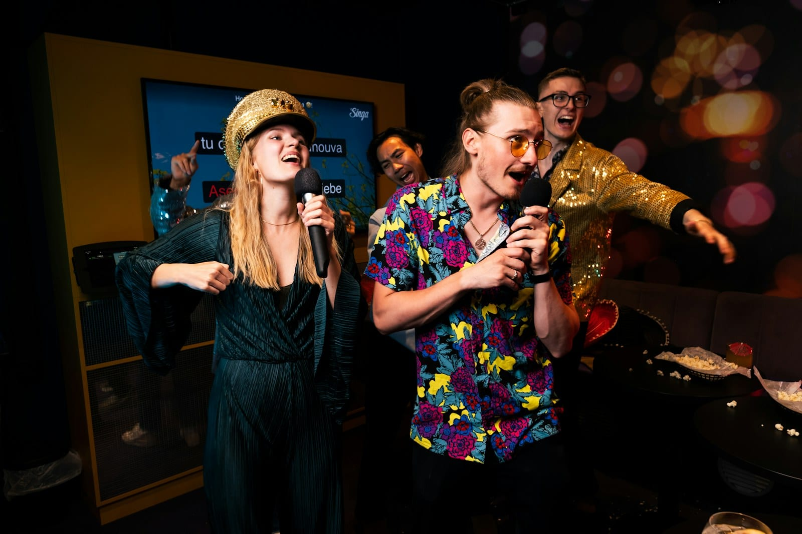

RESEARCH
Karaoke team building
We looked at what researchers found about singing together and feeling close, what they haven’t shown about teamwork, and how live band karaoke works for a team evening.

- We didn't find a study of karaoke at a company event. The closest research is on singing classes, a choir and a dance experiment.
- In those studies, singing together seemed to help people feel close quickly, including in a choir of 232 where most people didn't know each other.
- In a 2016 dance experiment, the groups that felt closer didn’t cooperate any better on a game afterward, and researchers in the field have warned that some of these effects haven’t held up when repeated.
You know the moment at a karaoke night when the quietest person in the office takes the microphone and the whole team starts singing along. That’s the moment you’re hoping for when you put karaoke on a team evening. If you’re weighing it for an offsite, it’s worth asking whether it does anything for the team once the night’s over.
Is karaoke good for team building? #
It can be, if what you want is for people to get comfortable with each other. We didn’t find a study of karaoke at a company event, so we looked at the closest research we could find, on singing classes, a choir and a dance experiment.
Music may also give people something easy to talk about. In a 2006 study, when strangers were asked to get to know each other, music was the topic they talked about most. So a night of songs everyone knows can give people a way into a conversation, even the ones who never go near the microphone.
Does singing together bring a team closer? #
It seems to help people feel close to each other fairly quickly. In a 2015 British study, 135 adults aged 18 to 83 joined new adult-education classes, some in singing and some in crafts or creative writing. After the first month, the people in the singing classes felt closer to their classmates than the people in the other classes did. By the third month, the other classes had caught up. People picked their own classes, though, which makes it harder to be sure the singing was what made the difference.
It seemed to work in a big group, too. In a 2016 study, a London community choir rehearsed in small groups of 20 to 80 and as one choir of 232. After 90 minutes of singing, people felt more connected in both, and the jump in closeness was bigger in the big choir, where most people didn’t know each other. That’s a good sign for a company party where people from different teams may never have met.
Does it make a team work together better? #
As far as we can tell, nobody has shown that it does. In a 2016 Oxford study, 94 people danced in groups of four strangers, each of them hearing music on headphones. The groups that danced the same moves in time with each other said they felt closer afterward. When the researchers then gave them a game that measures cooperation, there was no difference between the groups. That was dancing, and it’s the closest test we found of whether feeling closer turns into working together better.
Some researchers who study music have urged caution, too. In 2022, three of them pointed out that most studies of people doing things in time together don’t guard against the experimenters’ own expectations of how things will turn out. When other labs repeated the experiments with more safeguards, several didn’t find the original effects.
If your main goal for the evening is getting people comfortable with each other, feeling closer may be enough.
What is live band karaoke? #
Live band karaoke is karaoke with a live band behind the singer instead of a backing track. The band plays 80s and 90s hits whether or not a coworker gets up to sing, and it hands the microphone to anyone who wants a song. The words are on a screen, a host calls each singer up, and the band follows whoever is singing and keeps the song going if they lose the verse. Two or three coworkers can go up together on one song, and nobody has to sing who doesn’t want to.
Companies book it for a team evening in Denver or on a mountain retreat. If you’re still planning the rest of the offsite, we also have some company offsite ideas for remote teams.
Sources
- Pearce, E., Launay, J., and Dunbar, R. I. M. (2015). The ice-breaker effect: singing mediates fast social bonding. Royal Society Open Science. Read the source
- Weinstein, D., Launay, J., Pearce, E., Dunbar, R. I. M., and Stewart, L. (2016). Group music performance causes elevated pain thresholds and social bonding in small and large groups of singers. Evolution and Human Behavior. Read the source
- Rentfrow, P. J., and Gosling, S. D. (2006). Message in a ballad: the role of music preferences in interpersonal perception. Psychological Science. Read the source
- Tarr, B., Launay, J., and Dunbar, R. I. M. (2016). Silent disco: dancing in synchrony leads to elevated pain thresholds and social closeness. Evolution and Human Behavior. Read the source
- Atwood, S., Schachner, A., and Mehr, S. A. (2022). Expectancy effects threaten the inferential validity of synchrony-prosociality research. Open Mind. Read the source